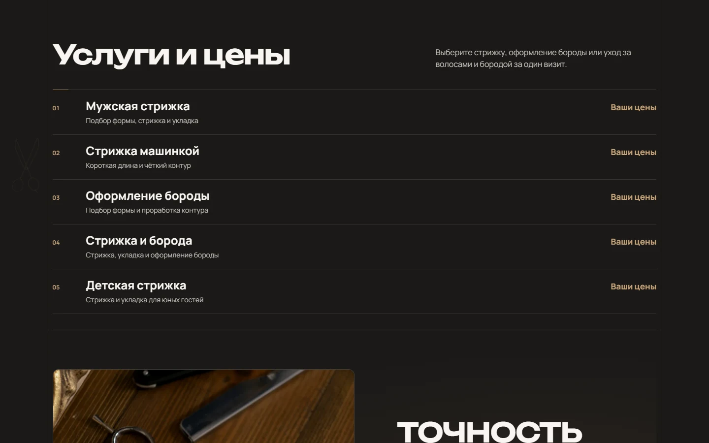
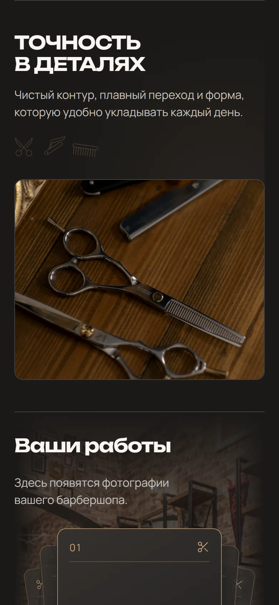

К работам


Club Barber
Барбершоп · Демонстрационный сайт
Сайт барбершопа с галереей стрижек, списком услуг и переходом к записи.
Открыть работающий сайтОт стрижки в галерее до записи
Фотография мастера за работой задаёт тон. Рядом два маршрута: перейти к записи или посмотреть стрижки.

Услуги и галерея
Стрижки и уход за бородой собраны в читаемый список. Галерея показывает примеры работ.
Версия для телефона
Меню сворачивается, а кнопка записи остаётся на первом экране. В демо используются поля для цен и отзывов.

Интерактивный просмотр
Прокрутите страницу и посмотрите, как устроен сайт. Для записи откройте его в отдельной вкладке.